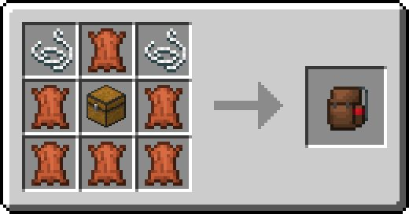
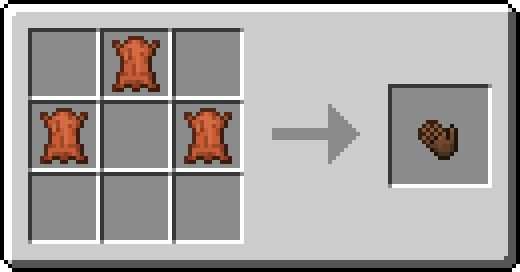
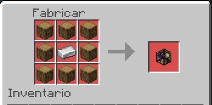
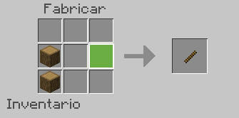
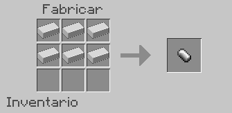
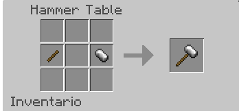

Mochila
Mano Mochila
Esto sirve para sacarse la mochila de encima, se le da click (El que usan para poner bloques, como no juego en celular no lo sabría decir). Recuerden, para darse cuenta si no la tienen, revisen en el medio de su barrita de experiencia, si la mochila aparece en negro no la tienen equipada y para eso solo pasen por arriba de la mochila.
Mesa Hammer
Esto sirve para crear la mesa de trabajo donde se fabricarán el martillo de las nuevas herramientas.
Mango
Cabeza / Cabezal
Martillo Final
Una vez hecho todos los crafteos, nos dirigimos a la hammer table para proceder con la última parte, la unión. Estos martillos tengo entendido que pican en un radio de 3x3.
